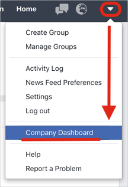
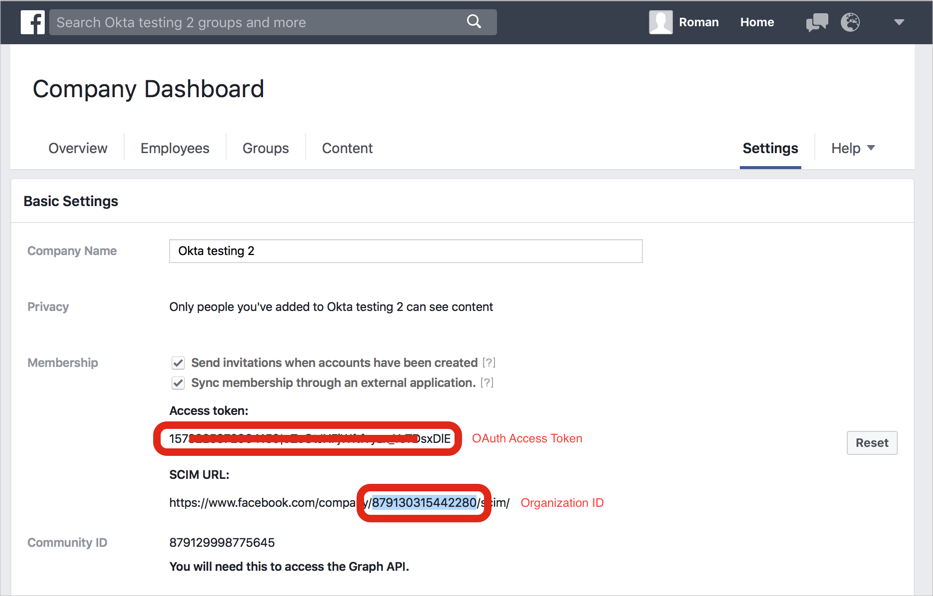
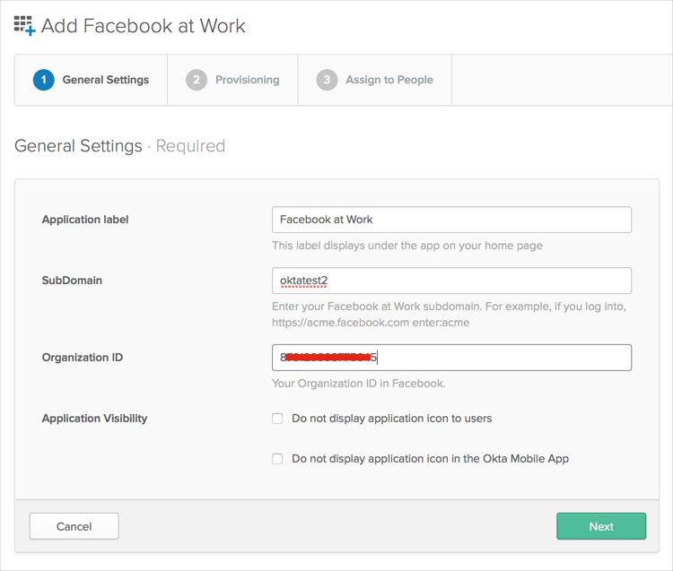
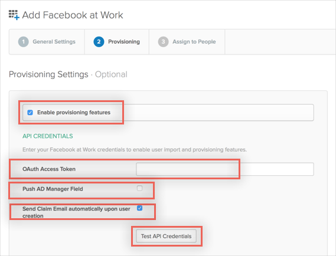
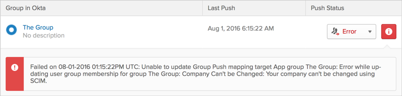

This guide provides the steps required to configure Provisioning for Facebook at Work
Note: The Push Groups feature currently not functional, although it is displayed in UI. This feature will be available shortly.
The following provisioning features are supported:
Import New Users
Import Profile Updates
Import User Schema
Push New Users
Push Profile Updates
Push Password Updates
Push User Deactivation
To enable Provisioning Features, you need to first get an Organization ID and OAuth Access Token from Facebook, as described here:
Login to your Facebook at Work organization under an Admin Account.
Navigate to Company Dashboard:

Locate the Settings tab and Membership section:

Make note of the Organization ID and OAuth Access Token values, you need these to configure Provisioning.
Make sure you have entered your Facebook Subdomain and Organization ID under the General Settings tab:

Now you can configure your Provisioning settings for Facebook at Work as follows:
Check the Enable provisioning features box.
Enter the following API CREDENTIALS:
Enter your OAuth Access Token.
Push AD Manager Field. Check this if you'd like to provision User's manager field from Active Directory (note that AD must be configured and the Manager User must exist in Facebook At Work).
Send Claim Email. Check this if you'd like Facebook to send an invitation email upon user creation. Note that SAML users may not want to enable this.
Click Test API Credentials to validate your configuration.

Scroll down and select the Provisioning Features you'd like to enable, select Next, then Done to finish the App configuration.
You can now assign people to the app, if needed.
Facebook At Work supports User's Schema Discovery, so you can add extra attributes if available to User's Profile. To do that in Okta:
Navigate to Directory > Profile Editor.
Select the APPS section in the left pane, then find your app in the list.
Check the list of the attributes and if you didn't found what you need, click the Add Attribute to display a list of extended attributes.
Check the attributes you want to add, then click Save.
You are now able to import and push these User's attributes values from/to Facebook.
The Group Push feature is not functional due to deprecation of groups management via Facebook SCIM API, so creating and updating Groups may fail with the following error:

This feature will be available shortly so this will no longer be an issue.